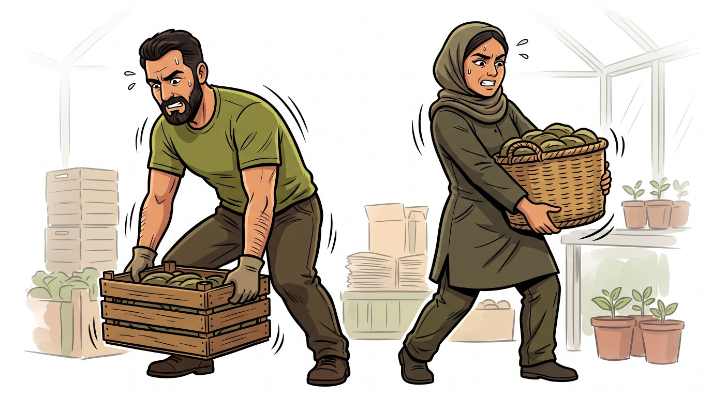
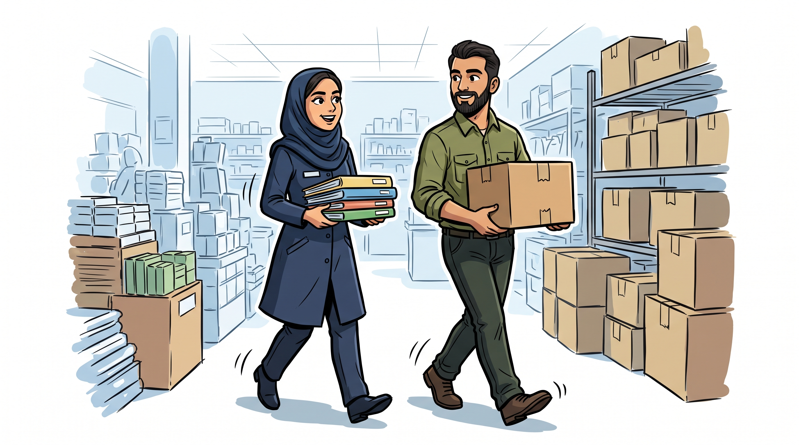
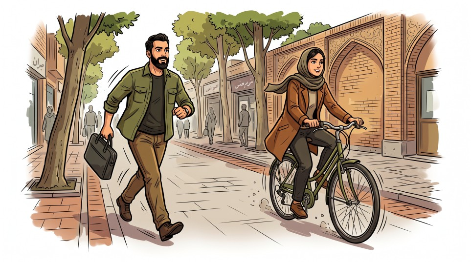
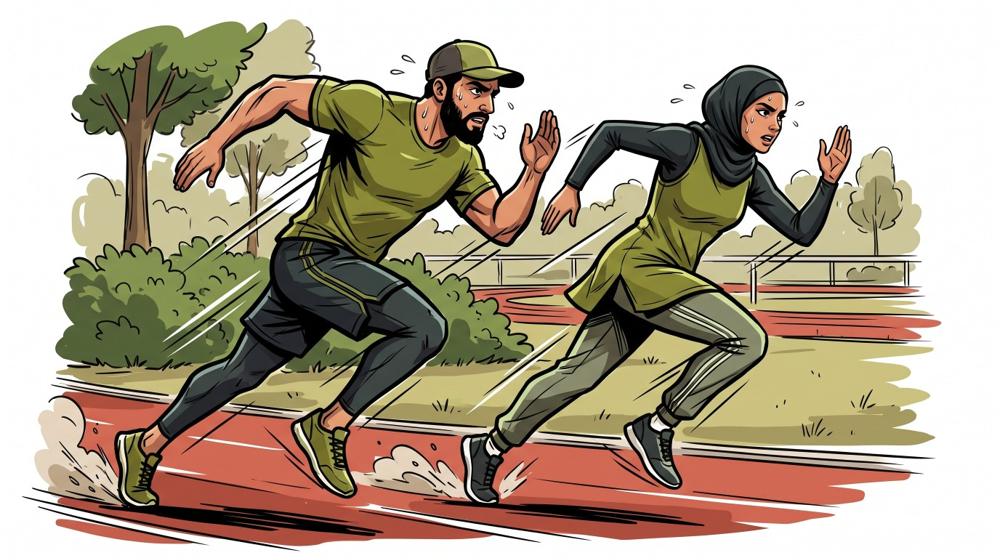
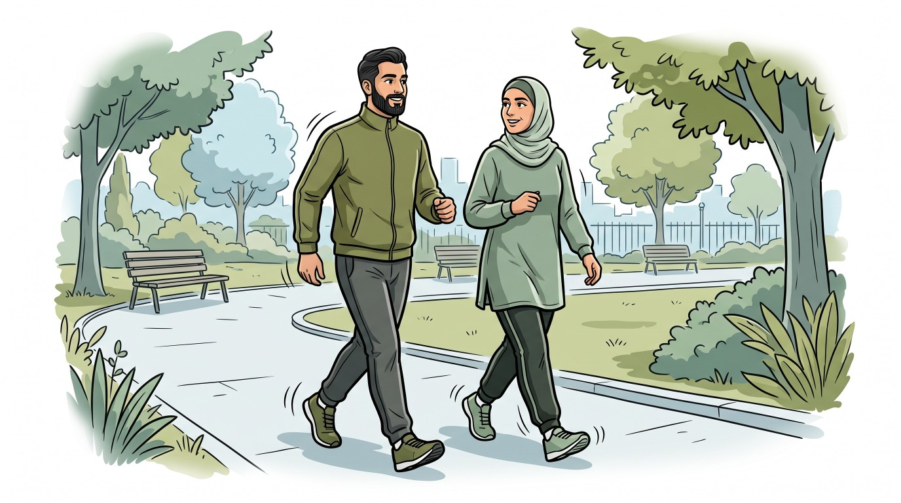
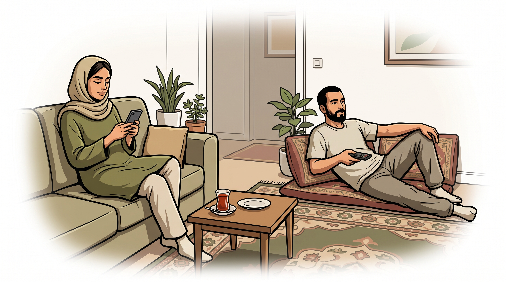

طرح تحقیقاتی ملی و دانشگاهی
شما جهت شرکت در طرح تحقیقاتی با عنوان «ترجمه و روانسنجی نسخه فارسی پرسشنامه جهانی فعالیت فیزیکی (GPAQ)» دعوت شدهاید. هدف از این پژوهش، ارزیابی دقیق سطح فعالیت بدنی در مشاغل و سبک زندگی جامعه است. مشارکت و پاسخهای صادقانه شما به ما در استانداردسازی این ابزار بینالمللی متعلق به سازمان جهانی بهداشت (WHO) کمک شایانی خواهد کرد.
🎓 مجری طرح: شایان فتاحیان (دانشجوی کارشناسی ارشد پرستاری، دانشگاه علوم پزشکی کاشان)
⚖️ کد مصوب کمیته اخلاق: IR.KAUMS.NUHEPM.REC.1405.046
🔒 محرمانگی: به شما اطمینان میدهیم که تمامی اطلاعات فردی شما کاملاً محرمانه و ناشناس محفوظ خواهد ماند.
در ادامه، میخواهم از شما درباره مدتزمانی که معمولا در طول یک هفته صرف انجام فعالیتهای بدنی مختلف میکنید، سؤالاتی بپرسم. لطفاً ، حتی اگر خودتان را فردِ پُرتحرکی نمیدانید به این سؤالات پاسخ دهید. ابتدا به زمانی که صرفِ کار کردن میکنید فکر کنید. منظور از کار، فعالیتهایی است که وظیفه دارید انجام دهید؛ که از جمله آن میتوان به کارِ باحقوق یا بدون حقوق، درس خواندن و آموزش دیدن، کارهای خانه، کشاورزی و برداشت محصول، ماهیگیری یا شکار برای تهیه غذا، و حتی گشتن به دنبال کار اشاره کرد.
در پاسخ به سؤالات زیر، منظور از فعالیتهای شدید (سنگین) ، کارهایی است که به تلاش بدنی زیادی نیاز دارند و باعث میشوند به شدت نفسنفس بزنید یا ضربان قلبتان خیلی بالا برود. منظور از فعالیتهای متوسط (سبک) ، کارهایی است که به تلاش بدنی متوسطی نیاز دارند و باعث میشوند تنفس یا ضربان قلب شما فقط کمی تندتر شود.
کارت راهنما: نمونه فعالیتهای کاری شدید (Show Card)

کارت راهنما: نمونه فعالیتهای کاری با شدت متوسط (Show Card)

کارت راهنما: نمونه فعالیتهای رفتوآمد و سفر فعال (Show Card)

کارت راهنما: نمونه فعالیتهای تفریحی و ورزشی شدید (Show Card)

کارت راهنما: نمونه فعالیتهای تفریحی با شدت متوسط (Show Card)

کارت راهنما: نمونه رفتارهای نشسته و کمتحرک در منزل (Show Card)

-